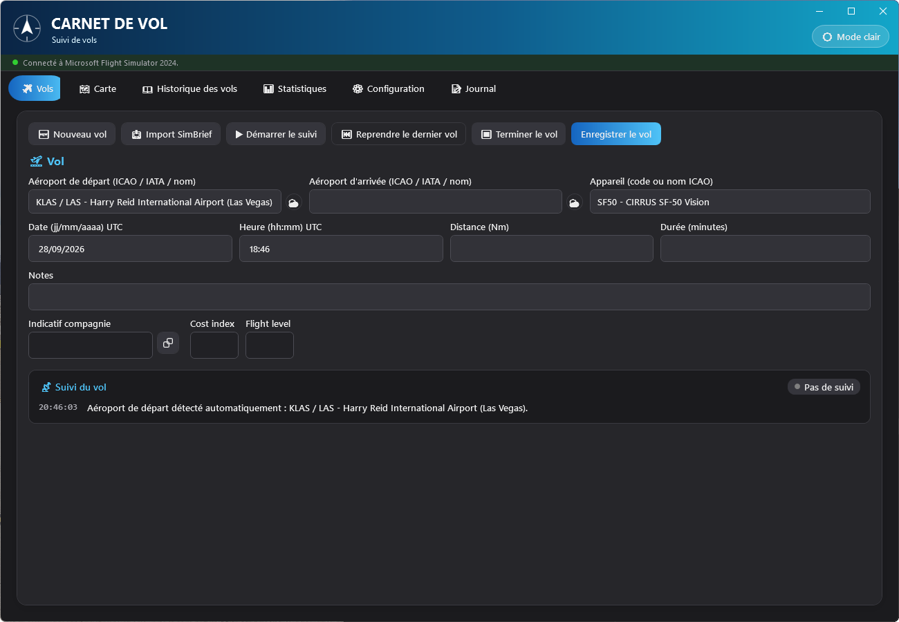
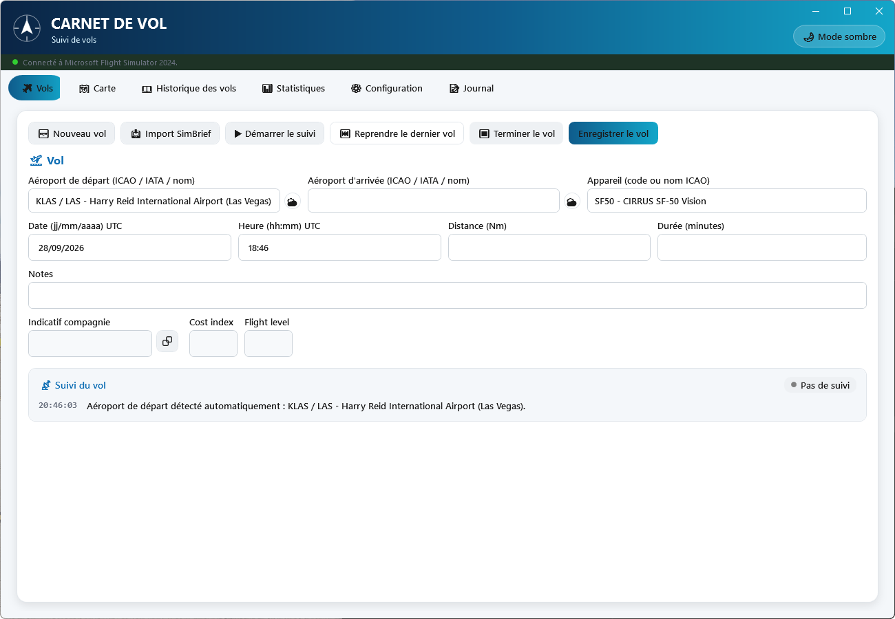
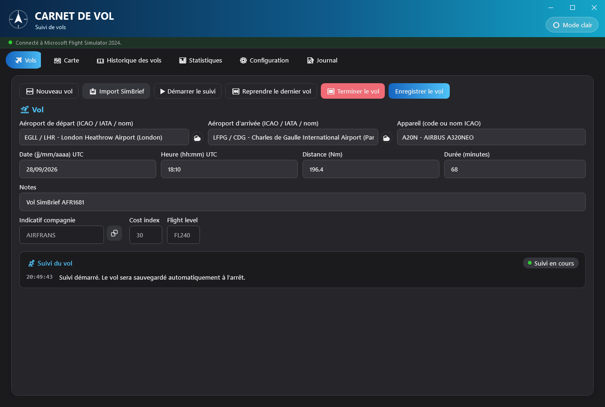
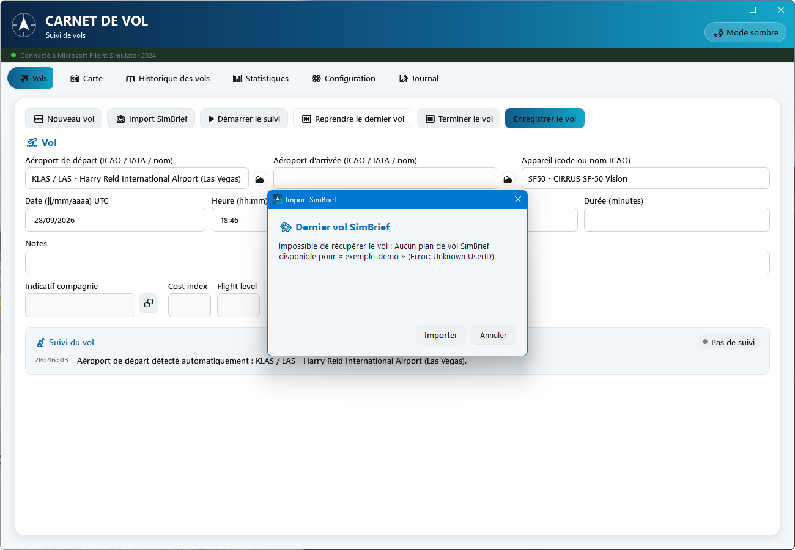
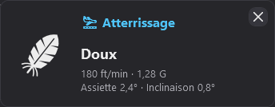
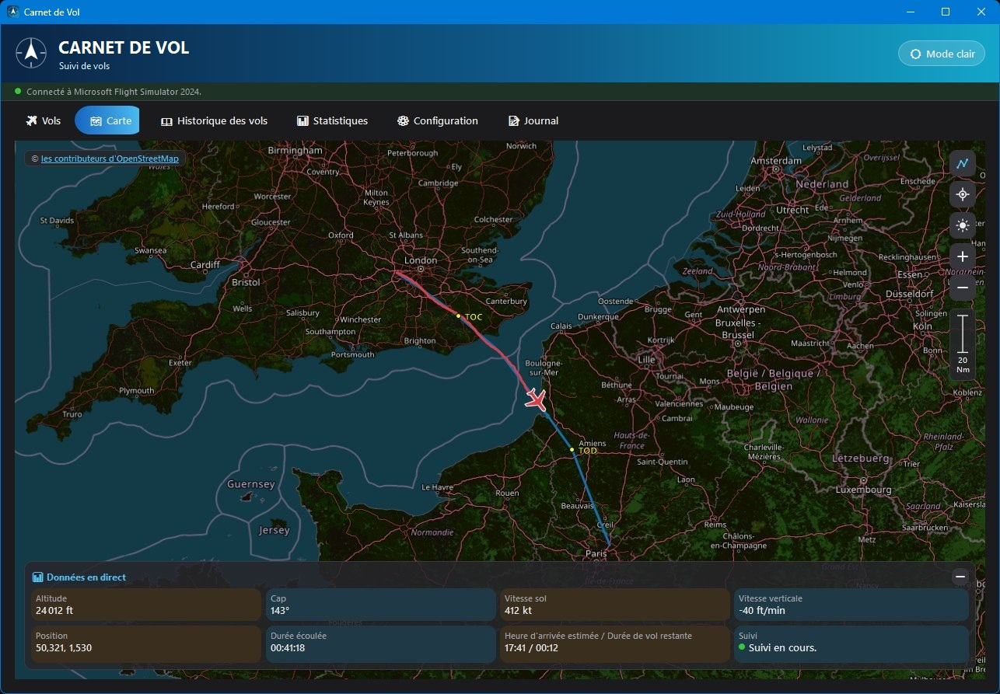
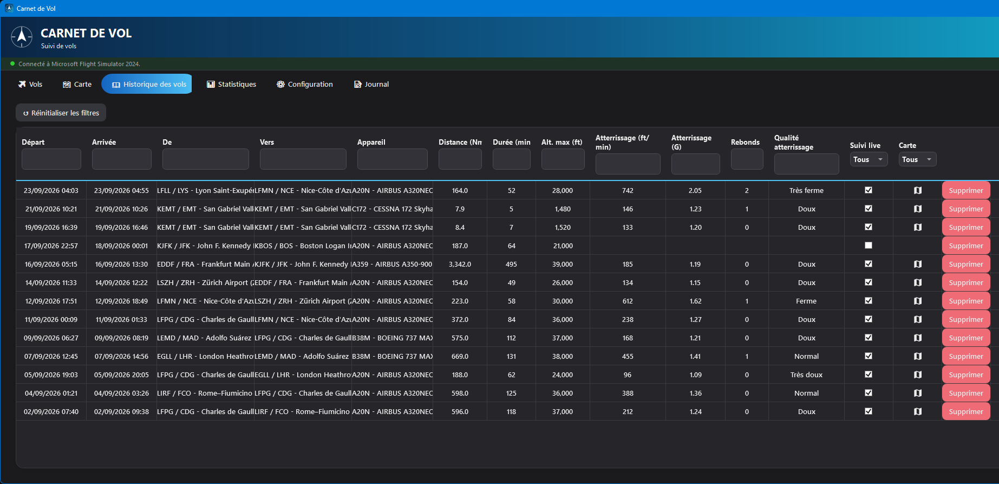
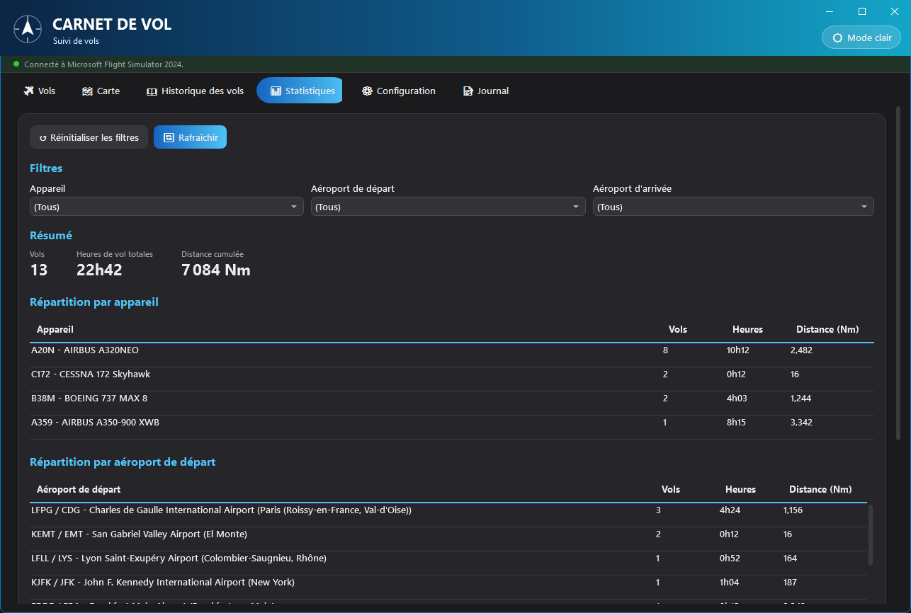
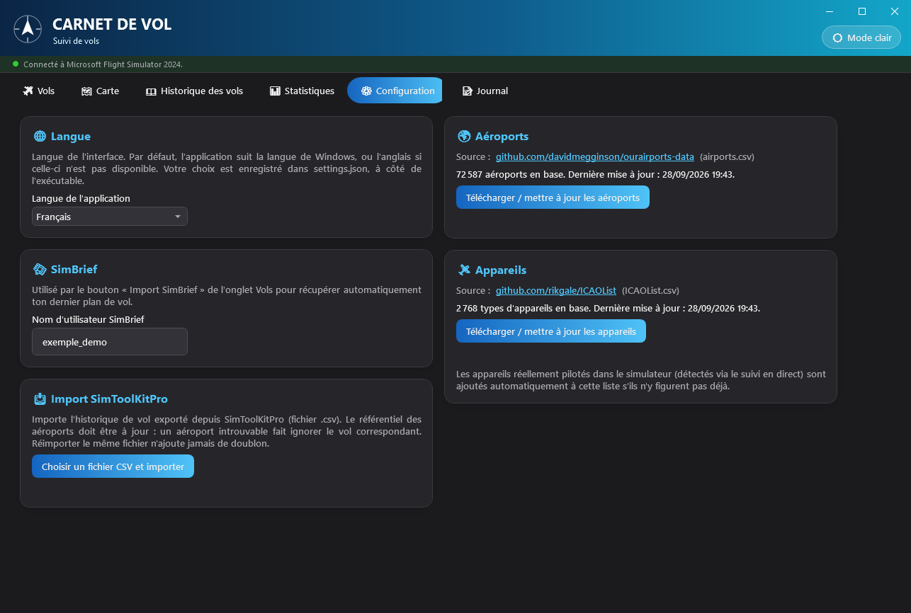
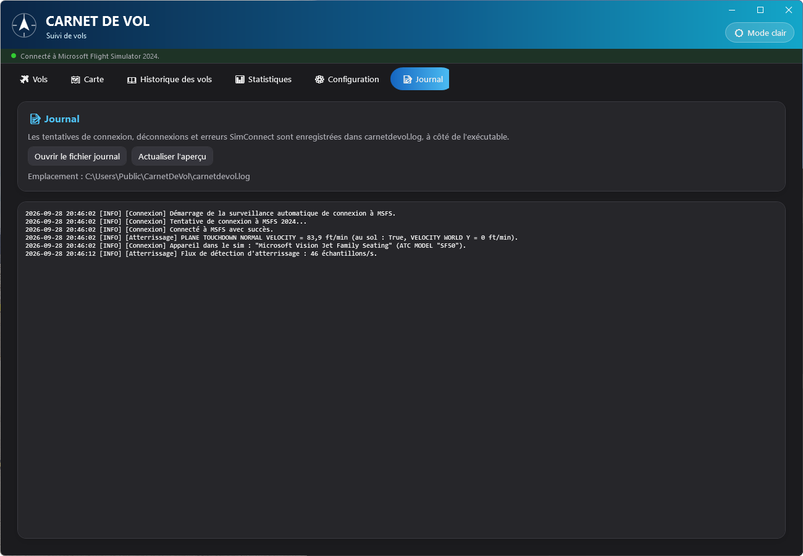

🧭 1. Présentation
Ce que fait Carnet de Vol, et pour qui.
Carnet de Vol est une application Windows autonome qui tient à jour l'historique de tous vos vols effectués sur Microsoft Flight Simulator 2024. Elle peut fonctionner de trois façons complémentaires :
- Suivi en direct : connectée à MSFS via SimConnect, elle détecte le décollage, enregistre la trajectoire GPS seconde par seconde, détecte l'atterrissage et en évalue la qualité, puis sauvegarde le vol automatiquement à l'arrêt.
- Saisie manuelle : pour consigner un vol après coup, sans suivi live.
- Import : depuis un plan de vol SimBrief (préremplissage du formulaire) ou depuis un export SimToolKitPro (import massif d'historique).
Toutes les données restent en local, dans une base SQLite à côté de l'exécutable — aucune donnée n'est envoyée à un serveur, à l'exception des appels en lecture seule vers SimBrief, adsbdb et aviationweather.gov décrits dans ce guide.
🚀 2. Premier lancement
Ce qui se passe automatiquement la première fois que vous ouvrez l'application.
Au tout premier démarrage, la base de données est vide : l'application télécharge alors automatiquement, en arrière-plan, les deux référentiels nécessaires au bon fonctionnement des champs de recherche :
| Référentiel | Source | Volume approximatif |
|---|---|---|
| Aéroports | ourairports-data (GitHub) | ~72 000 aéroports |
| Types d'appareils | rikgale/ICAOList (GitHub) | ~2 800 types |
Aucune action n'est requise : une connexion Internet est simplement nécessaire lors de ce premier lancement. Vous pouvez ensuite les remettre à jour manuellement à tout moment depuis l'onglet Configuration.
carnetdevol.db (vos vols et les référentiels),
carnetdevol.log (journal de connexion SimConnect),
theme.txt (thème clair/sombre choisi) et, si vous choisissez une
langue, settings.json. Ces fichiers ne font pas partie de
l'installation : si vous déplacez l'exécutable, copiez-les avec lui (ainsi que le dossier
Languages livré avec l'application) pour conserver votre
historique et vos réglages.
🖥️ 3. Interface générale
La bannière-barre de titre, l'indicateur de connexion, les six onglets et le thème.
La fenêtre principale est organisée en trois zones fixes, quel que soit l'onglet actif :
- Une bannière en haut, qui sert aussi de barre de titre : la fenêtre n'a pas de cadre Windows classique. En haut à droite, les boutons Réduire, Agrandir / Restaurer et Fermer (qui passe au rouge au survol) ; juste en dessous, le bouton 🌙 Mode sombre / ☀️ Mode clair qui bascule instantanément tout le thème de l'application (persisté d'une session à l'autre) ;
- Juste en dessous, une fine barre d'état avec un point de couleur (rouge = non connecté, vert = connecté) et un texte indiquant l'état de la connexion à MSFS 2024. Tant qu'elle n'est pas connectée, l'application retente automatiquement toutes les 5 secondes, sans action de votre part ;
- Six onglets : Vols, Carte, Historique des vols, Statistiques, Configuration, Journal — détaillés dans les sections suivantes.
L'application s'affiche dans la langue de Windows si elle est disponible (français, anglais ou espagnol, quelle que soit la variante régionale : français canadien ou belge, anglais britannique ou américain…), et en anglais sinon. Vous pouvez en changer à tout moment dans l'onglet Configuration.


✈️ 4. Onglet Vols
Le cœur de l'application : saisir, importer ou enregistrer un vol en direct.

Saisie manuelle
Pour consigner un vol sans suivi en direct :
- Cliquez 🆕 Nouveau vol pour repartir d'un formulaire vide.
- Renseignez l'aéroport de départ et l'aéroport d'arrivée : les deux champs acceptent un code ICAO, IATA ou un nom d'aéroport partiel — une liste de suggestions apparaît au fur et à mesure de la saisie, à sélectionner à la souris ou au clavier.
- Renseignez l'appareil de la même façon (code ou nom ICAO).
- La distance (Nm) se calcule automatiquement à vol d'oiseau (orthodromie) dès que le départ et l'arrivée sont choisis — vous pouvez la corriger manuellement si besoin (par exemple pour refléter une route réelle plus longue).
- Complétez la date/heure UTC de départ (formats stricts
jj/mm/aaaaethh:mm), la durée en minutes, et d'éventuelles notes. - Cliquez Enregistrer le vol.
Import depuis SimBrief
Si vous préparez vos vols avec SimBrief, l'application peut récupérer votre dernier plan de vol et préremplir le formulaire à votre place (l'API SimBrief ne renvoie que le vol le plus récent, jamais un historique).
- Configurez d'abord votre nom d'utilisateur SimBrief dans l'onglet Configuration (une seule fois).
- Depuis l'onglet Vols, cliquez 📥 Import SimBrief.
- Une fenêtre s'ouvre, récupère le plan et affiche route, appareil, distance, heure de départ estimée, durée et indicatif compagnie.
- Cliquez Importer pour reporter toutes ces valeurs dans le formulaire (y compris le Cost index et le Flight level prévus, en lecture seule), ou Annuler pour ne rien changer.

Suivi en direct (SimConnect)
Quand MSFS 2024 est lancé et que l'application y est connectée (point vert dans la barre d'état), le suivi en direct peut démarrer de deux façons :
- Automatiquement — dès que l'avion roule au sol (vitesse sol > 3 kt) près d'un aéroport de départ déjà connu (détecté lui aussi automatiquement dans un rayon de 5 Nm autour du premier point au sol reçu).
- Manuellement — en choisissant l'aéroport de départ puis en cliquant ▶ Démarrer le suivi.
Pendant le suivi, l'onglet Carte affiche la position de l'avion en direct et trace le trajet parcouru. Dès l'atterrissage détecté, le champ Aéroport d'arrivée se remplit tout seul avec l'aéroport le plus proche (rayon de 5 Nm), s'il était vide. Pour terminer :
- Cliquez ⏹ Terminer le vol.
- Si aucun aéroport d'arrivée n'a été choisi, l'application retient le plus proche de la position actuelle (rayon de 5 Nm) ; si elle n'en trouve pas, sélectionnez-le vous-même puis cliquez de nouveau sur le bouton. Une arrivée remplie automatiquement à l'atterrissage est elle aussi réévaluée à ce moment-là (utile après un touch-and-go sur un autre terrain).
- Le vol est sauvegardé automatiquement : distance réelle parcourue (calculée à partir du tracé GPS, pas à vol d'oiseau), durée, altitude maximale, appareil et données d'atterrissage sont tous renseignés sans saisie manuelle.
Le cadre Suivi du vol, sous le formulaire, résume le suivi en cours :
- un badge en haut à droite : Pas de suivi (point gris) ou Suivi en cours (point vert) ;
- le dernier atterrissage (qualité, vitesse verticale, G et rebonds) ;
- l'historique horodaté des étapes du suivi : démarrage, aéroport de départ détecté, atterrissage, vol enregistré. Chaque étape s'ajoute à la liste au lieu de remplacer la précédente, et les erreurs (MSFS non connecté, aéroport de départ manquant, arrivée introuvable…) s'affichent en orange.
L'historique repart de zéro au démarrage d'un nouveau suivi et au clic sur 🆕 Nouveau vol.
Détection de l'atterrissage
Pendant un suivi en direct, l'atterrissage est mesuré à chaque image du simulateur (environ 45 fois par seconde), et non une fois par seconde :
- Vitesse verticale au toucher : celle mesurée par MSFS lui-même au contact des roues, perpendiculaire à la piste (juste même sur une piste en pente). Le contact du train principal est retenu, pas celui, plus doux, de la roulette de nez.
- Facteur de charge (G) : le pic mesuré dans les 2 secondes qui suivent le toucher.
- Rebonds : si l'avion repart en l'air puis retouche, chaque rebond est compté, et l'atterrissage est évalué sur le contact le plus dur. Les micro-décollages de quelques centièmes de seconde pendant l'écrasement du train ne comptent pas, et un touch-and-go ou une remise de gaz (plus de 10 s en l'air) n'est pas un rebond.
- Assiette et inclinaison au toucher (assiette positive = nez haut).
L'atterrissage est validé une fois l'avion resté 3 secondes au sol (pour pouvoir compter un éventuel rebond) ; une pop-up s'affiche alors, jusqu'à ce que vous la fermiez avec sa croix, avec ces valeurs, une icône et une classification automatique de la qualité :
| Vitesse verticale au toucher | Qualité affichée | Icône |
|---|---|---|
| < 100 ft/min | Très doux | nuage |
| 100 – 249 ft/min | Doux | plume |
| 250 – 499 ft/min | Normal | flèche vers la piste |
| 500 – 699 ft/min | Ferme | flèche et impacts |
| ≥ 700 ft/min | Très ferme | enclume |

La qualité et les valeurs restent ensuite affichées dans le cadre Suivi du vol de l'onglet Vols (ligne « Dernier atterrissage »). Elles sont aussi conservées avec le vol et consultables plus tard dans l'Historique des vols (colonnes « Atterrissage (ft/min) », « Atterrissage (G) », « Rebonds » et « Qualité atterrissage »), ce qui permet par exemple de filtrer pour retrouver ses meilleurs — ou pires — posés.
Exemple d'utilisation — vol suivi de bout en bout
- MSFS 2024 est ouvert, un vol chargé au parking de départ. La barre d'état passe au vert.
- L'appareil chargé dans MSFS s'affiche tout seul dans le champ Appareil.
- Vous commencez à rouler : l'aéroport de départ se remplit tout seul, le suivi démarre automatiquement (le cadre Suivi du vol passe à « Suivi en cours »), et l'onglet Carte se met à tracer votre position.
- En vol, vous consultez le panneau Données en direct (altitude, cap, vitesses, ETA) directement sur la carte.
- Trois secondes après le posé, une pop-up affiche la qualité de votre atterrissage (vitesse au toucher, G, rebonds, assiette) et l'aéroport d'arrivée se remplit tout seul.
- Une fois stationné, cliquez ⏹ Terminer le vol : le vol apparaît immédiatement dans l'Historique des vols, tracé GPS inclus.
🗺️ 5. Onglet Carte
Carte OpenStreetMap, position en direct, tracé du vol et trajet prévu.

La carte se manipule à la souris (glisser pour déplacer, molette pour zoomer) ou avec les boutons empilés en haut à droite :
| Bouton | Action |
|---|---|
| Trajet prévu (icône itinéraire en pointillés) | Affiche/masque le trajet prévu du plan SimBrief importé, en bleu — utile pour comparer la route effectivement suivie (tracé rouge) à la route planifiée. Le sommet de montée et le début de descente prévus y sont marqués d'un point jaune légendé TOC (top of climb) et TOD (top of descent). |
| Recentrer (icône viseur) | Réactive le suivi automatique de la carte sur l'avion. Ce suivi se désactive tout seul dès que vous faites glisser la carte à la main, pour vous laisser regarder ailleurs sans être « recentré » de force. |
| Mode sombre de la carte (lune/soleil) | Bascule l'apparence des tuiles OpenStreetMap indépendamment du thème général de l'application. |
| + / − | Zoom avant / arrière, autour du centre de la partie visible de la carte (au-dessus du panneau « Données en direct ») : le point que vous regardez reste en place. |
Le tracé reste affiché à tous les niveaux de zoom, même pour un long vol observé de très près (par exemple le roulage à l'arrivée d'un long-courrier).
Une échelle verticale graduée (en Nm) s'affiche sous ces boutons dès l'ouverture de l'onglet et se recalcule automatiquement à chaque changement de zoom ou de position, comme sur une carte papier classique. Elle garde la largeur des boutons, la valeur et l'unité étant affichées sur deux lignes.
En haut à gauche, la mention © les contributeurs d'OpenStreetMap crédite les données cartographiques (licence ODbL, voir l'annexe) ; un clic dessus ouvre la page de licence d'OpenStreetMap dans votre navigateur.
Pendant un suivi actif, le panneau Données en direct en bas de la carte regroupe : altitude, cap, vitesse sol, vitesse verticale, position GPS, durée écoulée, heure d'arrivée estimée / durée de vol restante, et l'état de connexion. Il peut être réduit avec le bouton − dans son coin pour dégager de la place sur la carte.
📖 6. Historique des vols
Tous vos vols enregistrés, filtrables colonne par colonne.

Le tableau liste tous les vols enregistrés, du plus récent au plus ancien, avec pour chacun : dates de départ/arrivée, aéroports, appareil, distance, durée, altitude maximale, données d'atterrissage (vitesse verticale, G, nombre de rebonds, qualité), si le vol a été suivi en direct, et s'il possède un tracé GPS.
- Filtrer : tapez dans le champ sous n'importe quel en-tête de colonne (texte contenu, insensible à la casse) ; combinez plusieurs colonnes à la fois.
- Réinitialiser : le bouton ↺ Réinitialiser les filtres vide tous les filtres en un clic.
- Voir le tracé : double-cliquez sur une ligne pour l'ouvrir sur la carte (uniquement si un tracé GPS existe).
- Supprimer : le bouton « Supprimer » de chaque ligne demande une confirmation avant une suppression définitive et irréversible.
Exemple d'utilisation — retrouver ses atterrissages les plus fermes
- Ouvrez Historique des vols.
- Dans le filtre de la colonne Qualité atterrissage, tapez
ferme— la liste ne garde que les vols « Ferme » et « Très ferme » (le filtre teste si le texte est contenu, donc les deux libellés remontent). - Triez ensuite en cliquant l'en-tête Atterrissage (ft/min) pour classer du plus dur au plus doux.
📊 7. Statistiques
Totaux et répartitions, avec filtres par appareil et par aéroport.

Cet onglet se rafraîchit automatiquement à chaque fois que vous le sélectionnez, pour ne jamais afficher des chiffres périmés après l'ajout ou la suppression d'un vol.
- Filtres : trois listes déroulantes (appareil, aéroport de départ, aéroport d'arrivée), combinables, alimentées automatiquement à partir de vos vols existants.
- Résumé : nombre de vols, heures de vol totales et distance cumulée (Nm) pour la sélection filtrée.
- Répartitions : trois tableaux (par appareil, par aéroport de départ, par aéroport d'arrivée), chacun avec vols / heures / distance, triés du plus fréquent au moins fréquent.
Le bouton ↺ Réinitialiser les filtres revient à « (Tous) » partout ; 🔄 Rafraîchir force un recalcul immédiat.
⚙️ 8. Configuration
Langue de l'application, identifiant SimBrief, mise à jour des bases aéroports/appareils, et import SimToolKitPro.

L'onglet est organisé en deux colonnes : les réglages à gauche, les référentiels des aéroports et des appareils à droite. Dans une fenêtre étroite (moins de 900 pixels de large environ), les blocs s'empilent sur une seule colonne.
🌐 Langue
La liste Langue de l'application ne propose que les langues disponibles (aujourd'hui English, Español et Français). Le changement est immédiat, sans redémarrer : menus, onglets, colonnes et messages passent dans la nouvelle langue, y compris la qualité d'atterrissage des vols déjà enregistrés.
Votre choix est enregistré dans settings.json, à côté de
l'exécutable, et prime ensuite sur la langue de Windows à chaque lancement. Supprimez ce
fichier pour revenir à la langue de Windows.
Languages, livré
à côté de l'exécutable et nommé d'après le code international de la langue
(fr.json, en.json). Pour ajouter une
langue, copiez en.json sous le nom du nouveau code (par exemple
de.json), traduisez les textes et la valeur
_name (nom affiché dans la liste), puis relancez
l'application. Un texte manquant s'affiche en anglais.
🛰️ SimBrief
Le champ Nom d'utilisateur SimBrief est enregistré automatiquement dès que vous en sortez (pas besoin de bouton « Enregistrer »). C'est cet identifiant qui est utilisé par le bouton Import SimBrief de l'onglet Vols.
🌍 Aéroports & 🛩️ Appareils
Chaque bloc affiche le nombre d'entrées actuellement en base et la date de dernière mise à jour, avec un bouton pour retélécharger la source la plus récente (ourairports-data pour les aéroports, rikgale/ICAOList pour les appareils). Une mise à jour n'efface jamais vos vols : elle ne touche que les tables de référence.
📥 Import SimToolKitPro
Si vous utilisiez auparavant SimToolKitPro pour votre carnet de vol, vous pouvez importer d'un coup tout son historique exporté en CSV :
- Assurez-vous que le référentiel des aéroports est à jour (un aéroport absent du référentiel fait ignorer le vol correspondant).
- Cliquez Choisir un fichier CSV et importer, puis sélectionnez l'export.
- Un résumé s'affiche : nombre de vols importés, doublons déjà présents ignorés, vols ignorés faute d'aéroport reconnu, et lignes invalides ignorées.
📝 9. Journal
L'historique technique des connexions à MSFS, pour diagnostiquer un souci de connexion.

carnetdevol.log.Chaque tentative de connexion, déconnexion et erreur SimConnect est journalisée dans
carnetdevol.log, à côté de l'exécutable, ainsi que l'appareil
détecté dans le simulateur et le détail de la mesure de chaque atterrissage (vitesse au
toucher transmise par MSFS, résultat final). Deux boutons :
- Ouvrir le fichier journal — l'ouvre dans votre visionneuse de texte par défaut, pour le consulter en entier ou le joindre à un rapport de bug.
- Actualiser l'aperçu — rafraîchit l'aperçu affiché directement dans l'application (les 200 dernières lignes).
Tant que MSFS n'est pas lancé, seul le premier échec de connexion est détaillé, suivi
d'un rappel d'une ligne environ toutes les 5 minutes. Au-delà de 5 Mo, le journal est renommé
en carnetdevol.old.log (qui remplace le précédent) et un nouveau
fichier démarre.
💡 10. Astuces & bonnes pratiques
Ce que l'application fait automatiquement, sans action de votre part
| Situation | Comportement automatique |
|---|---|
| Premier lancement, base vide | Téléchargement des référentiels aéroports/appareils |
| Aucune langue choisie | Affichage dans la langue de Windows, ou en anglais si elle n'est pas disponible |
| MSFS non connecté | Nouvelle tentative de connexion toutes les 5 secondes |
| Avion au sol, aéroport de départ inconnu | Détection de l'aéroport le plus proche (rayon 5 Nm) |
| Connexion à MSFS, champ Appareil vide | Affichage de l'appareil chargé dans le simulateur |
| Avion qui commence à rouler (> 3 kt) | Démarrage automatique du suivi |
| Atterrissage détecté, arrivée non choisie | Remplissage de l'aéroport d'arrivée le plus proche |
| Fin de suivi sans arrivée choisie | Détection de l'aéroport d'arrivée le plus proche |
| Appareil piloté inconnu du référentiel | Ajout automatique à la liste des appareils |
Fichiers de l'application
Toutes vos données vivent dans des fichiers à côté de CarnetDeVol.exe :
Pour sauvegarder votre historique ou migrer vers une nouvelle
installation, copiez simplement carnetdevol.db à côté du nouvel
exécutable.
🛠️ 11. Dépannage
« Non connecté à MSFS 2024 » ne passe jamais au vert
Vérifiez que Microsoft Flight Simulator 2024 est bien lancé et qu'un vol est chargé. Consultez l'onglet Journal : les tentatives de connexion et leurs erreurs y sont détaillées. La reconnexion est automatique (toutes les 5 s), aucune action n'est nécessaire une fois MSFS disponible.
L'import SimBrief affiche « Impossible de récupérer le vol »
Vérifiez l'orthographe du nom d'utilisateur SimBrief configuré dans l'onglet Configuration (c'est l'identifiant pilote utilisé sur SimBrief, pas votre adresse e-mail), et assurez-vous qu'un plan de vol a bien été généré récemment sur SimBrief avec ce compte.
Le champ Appareil ou Aéroport d'arrivée ne se remplit pas tout seul
C'est voulu s'il contient déjà une valeur choisie par vous ou importée depuis SimBrief : la détection automatique ne l'écrase jamais. Cliquez 🆕 Nouveau vol pour repartir d'un formulaire vide. Pour l'arrivée, l'avion doit avoir atterri à moins de 5 Nm d'un aéroport connu du référentiel, pendant un suivi en direct. L'onglet Journal indique l'appareil détecté dans le simulateur.
Un vol de l'historique n'a pas de tracé sur la carte
C'est normal pour un vol saisi manuellement ou importé (SimBrief, SimToolKitPro) : seul un vol réellement suivi en direct via SimConnect possède des points GPS. La colonne « Carte » de l'Historique des vols l'indique clairement.
Un aéroport n'est pas trouvé lors d'un import SimToolKitPro
Mettez d'abord à jour le référentiel des aéroports depuis l'onglet Configuration, puis relancez l'import : les vols précédemment ignorés faute d'aéroport reconnu seront importés sans créer de doublon pour les vols déjà passés.
⚖️ Annexe — Sources de données et licences
Les services externes utilisés par l'application, et les conditions qui s'y appliquent.
Carnet de Vol n'utilise que des appels en lecture seule vers les services ci-dessous. Conditions vérifiées le 24/09/2026 sur les pages officielles de chaque service ; elles peuvent évoluer, les liens indiqués font foi.
| Service | Utilisation dans l'application | Licence / conditions |
|---|---|---|
| OpenStreetMap | Fond de carte de l'onglet Carte (tuiles tile.openstreetmap.org) | Données sous licence ODbL (Open Database License), attribution « © OpenStreetMap contributors » obligatoire ; usage des tuiles soumis à la politique d'usage des tuiles de l'OSMF. |
| OurAirports (ourairports-data) | Référentiel des aéroports (airports.csv) |
Domaine public (dépôt sous The Unlicense) ; fourni sans garantie d'exactitude ; attribution appréciée mais non obligatoire. |
| rikgale/ICAOList | Référentiel des types d'appareils (ICAOList.csv) |
Aucune licence déclarée par l'auteur. Les codes de type eux-mêmes proviennent du document OACI 8643 (Aircraft Type Designators). Liste utilisée uniquement pour la recherche d'appareils, en local. |
| SimBrief (Navigraph) | Import de votre dernier plan de vol (xml.fetcher.php) |
Soumis aux conditions d'utilisation Navigraph et aux conditions développeurs : usage simulation uniquement, interdit pour la navigation réelle et pour comptabiliser des heures de vol en vue d'une licence de pilote ; ne pas surcharger l'API. SimBrief est une marque de Navigraph. |
| adsbdb | Indicatif radio de la compagnie lors d'un import SimBrief | Projet open source sous licence MIT (code source) ; API publique gratuite sans conditions d'utilisation publiées. Données issues de sources tierces créditées par le projet. |
| aviationweather.gov (NOAA / NWS) | METAR affiché au survol de l'icône météo ⛅ | Informations du National Weather Service dans le domaine public (avertissement NWS), fournies « en l'état », sans garantie ; limite de 100 requêtes par minute. |
%LocalAppData%\GMap.NET),
ne propose aucun téléchargement de carte hors ligne, et affiche en permanence
l'attribution OpenStreetMap, lisible, dans le coin supérieur gauche de la carte, avec un
lien vers la page de licence. Les appels SimBrief, adsbdb et METAR ne sont faits qu'à votre
demande (bouton d'import, survol de l'icône météo).
Microsoft Flight Simulator 2024 et SimConnect sont des marques de Microsoft ; Carnet de Vol n'est affilié ni à Microsoft, ni à Navigraph, ni aux autres services cités.